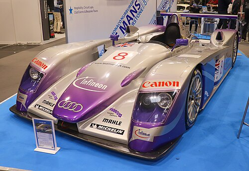

2006 — Present | Germany's supercar

When Audi unveiled the R8 at the Paris Motor Show in 2006, it landed like a bomb. Here was a German manufacturer — known for luxury saloons and AWD wagons — producing a mid-engine supercar that could genuinely challenge Ferrari and Lamborghini. The automotive world paid attention. Then they drove it, and they were completely won over.
The R8's name is a direct reference to Audi's Le Mans racing car, the R8 prototype that won at La Sarthe five times between 2000 and 2005. The road car shares more than just a name with its racing cousin — the philosophy of engineering excellence, aerodynamic efficiency, and driver engagement runs through both.
The R8 was built around the Audi Space Frame — an aluminium and carbon fibre structure that kept weight down while maximising rigidity. The distinctive side blades running along the doors became the car's visual signature, a bold styling choice that was controversial at first and iconic ever since. The mid-engine layout, with the engine sitting just behind the driver, gave the R8 near-perfect weight distribution and handling balance.
For the second generation (launched in 2015), Audi switched to an all-aluminium and carbon fibre Multi-Material Space Frame, shedding weight while adding rigidity. The result was a car that felt even sharper and more precise than the already excellent original.
The headline version has always been the V10 — a naturally aspirated 5.2-litre engine that revs to 8,700 rpm and produces one of the greatest sounds in the automotive world. No turbos. No superchargers. Just ten cylinders breathing freely and screaming toward the redline. In Plus form, it produces 610 hp, enough for a 0–100 km/h time of 3.2 seconds and a top speed of 330 km/h.
That engine is shared with the Lamborghini Huracán — both cars ride on the same platform — but Audi and Lamborghini tune and develop them differently, giving each car its own distinct character. The R8 is the more refined, daily-driveable machine. The Huracán is the wilder one.
The R8 LMS was Audi's GT3 racing car, competing in endurance races around the world from 2009 onward. It won the Nürburgring 24 Hours on its very first attempt in 2012 — a result that underlined just how good the underlying car was. The R8 LMS GT3 evo II continued that legacy into the 2020s, with victories in the Bathurst 12 Hour and numerous GT World Challenge rounds.
| Engine | 5.2L naturally aspirated V10 |
| Power | 620 hp (456 kW) |
| Torque | 580 Nm (428 lb-ft) |
| Drivetrain | Quattro AWD |
| 0–100 km/h | 3.1 seconds |
| Top Speed | 330 km/h (205 mph) |
| Gearbox | 7-speed S tronic dual-clutch |
| Weight | 1,595 kg |
| Production | 2006 – present |
The R8 proved that you don't need to be Italian to build a world-class supercar. It brought everyday usability to a segment that had historically demanded sacrifices — uncomfortable rides, difficult visibility, temperamental reliability. In an R8 you could drive to the track, lap faster than almost anything else there, and drive home in comfort. That combination made it one of the most beloved sports cars of the 21st century.
← Back to Audi